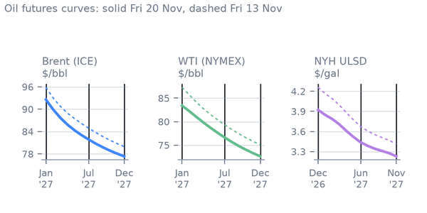
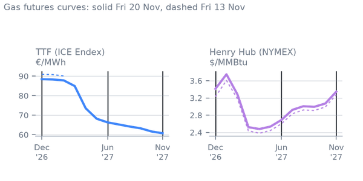

MORNING PULSE Huang's return to Nvidia sparks a broad relief rally Mon 23 Nov 2026 · new since the Sunday look-ahead (Sun 20:26) · Fri 20 Nov close already covered · Zurich time | ||||||||||||||||||||||||||||||||||||||||||||||||||||||||||||||||
| IN THIS BRIEF 1 Asia & overnight · 2 Monitor · 3 Oil & gas · 4 Top 5 reads · 5 News · 6 Calendar | ||||||||||||||||||||||||||||||||||||||||||||||||||||||||||||||||
• Nvidia's board reinstated Jensen Huang as chief executive 11 days after he resigned over reports of an affair with a woman suspected of spying for China (AP), and Wall Street opened sharply higher on the news (Reuters). AI stocks, which led last week's selloff, came straight back: Nvidia was up 36% at 16:25 Zurich, chipmakers led, and the S&P 500 is on course for its best day since April 2025 after seven straight losses, with the Nasdaq doing better still. Europe joined in, led by chip-equipment makers. Gold and copper rebounded after last week's steep losses, gold helped by Treasury Secretary Scott Bessent's warning against overtightening (FXStreet); copper had touched its lowest since March before turning. The volatility index (VIX) has eased but is still well above normal, so this is a relief rally in a nervous market, not an all-clear. • Bond markets are less convinced. Bessent's Sunday warning that the Federal Reserve (Fed) risks a policy mistake, echoed by hedge fund manager Bill Ackman, removed the tail: traders have priced out a half-point (50 basis point) December hike, which had about a one-in-ten chance a week ago. A quarter-point hike is still priced at about 90% or more on CME FedWatch, and two-year yields are rising as investors sell the Treasuries they bought for safety last week. Today brings the two-year note auction at 19:00 and New York Fed President John Williams at 22:00 Zurich; Wednesday's personal consumption expenditures (PCE) inflation data are the week's real test. The euro is weaker against both the dollar and the franc. • Crude is lower despite a claimed Houthi strike on a Saudi refinery and attacks on shipping near Hormuz; section 3 explains why. | ||||||||||||||||||||||||||||||||||||||||||||||||||||||||||||||||
1 · Asia & overnight Asia closed split, before New York's rebound | ||||||||||||||||||||||||||||||||||||||||||||||||||||||||||||||||
Change = latest quote vs each market's previous close; only markets that traded today are shown (closed today: Japan (Labour Thanksgiving Day)). Quotes as of Mon 16:27 Zurich. Candles = last 22 sessions, one per day. Yahoo Finance. | ||||||||||||||||||||||||||||||||||||||||||||||||||||||||||||||||
Our view. Asia's session ended before New York's rebound and was split by stock, not region: Korea took the tail of Friday's AI rout while Taiwan bounced, and the Kospi closed well off a low that was down almost 6%. China's cut in the margin requirement for leveraged stock buying (to 80% from 100%, from 30 Nov, announced Sunday by the Shanghai, Shenzhen and Beijing exchanges) shows Asian policymakers leaning against forced selling. Tokyo was shut for Labour Thanksgiving Day. If New York holds its gains, Asia has catching up to do tomorrow; a short US week with Thanksgiving thins liquidity, which exaggerates moves either way. | ||||||||||||||||||||||||||||||||||||||||||||||||||||||||||||||||
2 · Monitor The morning on one screen | ||||||||||||||||||||||||||||||||||||||||||||||||||||||||||||||||
NO 3m T-bill = Norwegian government 3-month bill (statskasseveksel) yield, Norges Bank, change in bp (official NIBOR fixings are not free to republish).
Changes = latest quote (Mon 16:27 Zurich) vs Fri 20 Nov close for markets that have traded since; the rest (cash equities not yet open) show Fri 20 Nov close vs Thu 19 Nov close. US yields: CNBC cash quotes at the time shown. Candles = last 22 sessions, one per day (green up, red down; yields and spreads keep the line); thin bar = 52-week range, blue tick = now. Tap a tile for its quote or data page. | ||||||||||||||||||||||||||||||||||||||||||||||||||||||||||||||||
3 · Oil and gas Supply, not attacks, is setting the oil price | ||||||||||||||||||||||||||||||||||||||||||||||||||||||||||||||||
Our view. Crude: Middle East exports are recovering and Libya's Sharara pipeline has restarted, so the Houthis' claimed strike on Saudi Arabia's Rabigh refinery and tanker attacks near Hormuz have not lifted prices; Brent touched a two-week low. The Organization of the Petroleum Exporting Countries and allies (OPEC+) meets this Sunday (29 Nov). Gas: forecasts of a cold snap lifted Dutch Title Transfer Facility (TTF) gas on ICE Endex. EU storage is 69% full against a five-year average of 87% (GIE, 21 Nov), and South Korea seeks priority access to Qatar's liquefied natural gas (LNG), so Europe competes with Asia for spare cargoes. Henry Hub fell as US weather models turned milder. Funds: on the managed-money measure, net longs in Brent and WTI are near the bottom of their one-year range, and funds are net short Henry Hub, close to their most bearish in a year. | ||||||||||||||||||||||||||||||||||||||||||||||||||||||||||||||||
| ||||||||||||||||||||||||||||||||||||||||||||||||||||||||||||||||
 | ||||||||||||||||||||||||||||||||||||||||||||||||||||||||||||||||
| ||||||||||||||||||||||||||||||||||||||||||||||||||||||||||||||||
 | ||||||||||||||||||||||||||||||||||||||||||||||||||||||||||||||||
| ||||||||||||||||||||||||||||||||||||||||||||||||||||||||||||||||
Front-month futures: Yahoo Finance per contract (roll rule as the Monitor); candles = last 22 sessions. Curves: ICE/NYMEX settlements from the EMMi futures archive, first 12 months. Diesel crack = NYH ULSD × 42 − Brent; 3-2-1 = (2 × RBOB + ULSD) × 42 ÷ 3 − WTI. TTF: ICE Endex (Amsterdam), about 10 minutes delayed; day-ahead = EEX settlement. Henry Hub spot: EIA daily (published with a lag; date on the tile, 'last' when older than the session covered). Positioning: CFTC disaggregated futures, managed money (WTI, ULSD, Henry Hub; positions as of Tuesday, published Friday) and ICE Futures Europe COT (Brent); TTF: ICE Endex MiFID II weekly report, investment funds, futures and options, TWh, week ending Friday (published the following week). | ||||||||||||||||||||||||||||||||||||||||||||||||||||||||||||||||
4 · Top 5 reads Worth your time | ||||||||||||||||||||||||||||||||||||||||||||||||||||||||||||||||
John Authers · Bloomberg Opinion · 2026-11-23 Just Be Thankful It's a Short Week John Authers takes stock of the biggest selloff since Liberation Day: unlike the tariff and Iran breaks, "this one lacks an obvious external driver — and there's no clear single measure that could end it." The Nasdaq 100 sits at its most stretched below its 50-day average in five years outside Liberation Day, so a trading bounce is plausible, but the S&P 500's earnings yield is still below the 10-year Treasury yield. Why it matters. AI-led equity selloff, Fed path and rotation from momentum to value AI & tech · FT News · Mon 15:32 Startling reversal of board’s position on disgraced co-founder sends AI giant’s share price soaring Why it matters. Today's turning point Markets & macro · Bloomberg.com · Mon 15:47 Why it matters. One strong day may not end the swings Energy · The Guardian · Mon 15:02 Why it matters. Cold weather meets thin EU storage Geopolitics · FT Analysis · Mon 06:00 Western carmakers have been routed from China as EVs go mainstream. Now they are battling to avoid a similar fate at home | ||||||||||||||||||||||||||||||||||||||||||||||||||||||||||||||||
5 · News by topic Today's news | ||||||||||||||||||||||||||||||||||||||||||||||||||||||||||||||||
| ||||||||||||||||||||||||||||||||||||||||||||||||||||||||||||||||
6 · Calendar Week ahead | ||||||||||||||||||||||||||||||||||||||||||||||||||||||||||||||||
● KEY = market-moving: central-bank decisions, CPI/PCE/GDP/jobs, budgets, OPEC | ||||||||||||||||||||||||||||||||||||||||||||||||||||||||||||||||
| Sources: Yahoo Finance, CNBC, Investing.com, FRED (St. Louis Fed), Eurostat, ONS/OECD, SFSO, Statistics Japan, US EIA, GIE AGSI+ via the markets-monitor feed, Wikipedia (S&P 500 members), iShares (STOXX Europe 600 holdings, EXSA), Nord Pool, ENTSO-E, FT (RSS + myFT Daily Digest), Google News (trusted outlets), curated calendar. Views are our house view: market commentary, not investment advice. Data gaps: Japan CPI: Japan CPI month not found. Built Mon 23 Nov 2026 16:28 Zurich. |